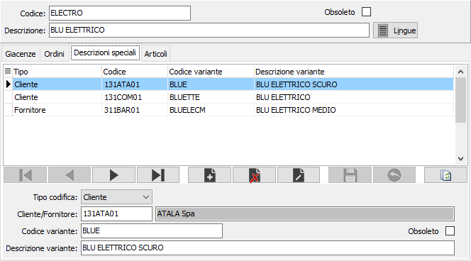

Descrizioni speciali
La sezione consente di visualizzare e manutenere le “descrizioni speciali” delle varianti. È infatti possibile memorizzare i codici variante e le descrizioni utilizzati dai clienti e dai fornitori e corrispondenti alle varianti dell’utente, allo scopo di effettuare stampe dei documenti che contengano anzichè codici e descrizioni dell’utente, codici e descrizioni dei clienti o dei fornitori.

TIPO CODICE: specifica se la descrizione è relativa ad un cliente oppure ad un fornitore.
CODICE CLIENTE/FORNITORE: codice alfanumerico di 8 caratteri, presente in anagrafica clienti o in anagrafica fornitori, che identifica il soggetto a cui si riferiscono i codici e le descrizioni di cui ai campi successivi. Sul campo sono attive le funzioni di ricerca (F9) sulla tabella stessa.
CODICE VARIANTE: inserire il codice della variante utilizzato dal cliente o dal fornitore e corrispondente alla variante attiva.
DESCRIZIONE: descrizione utilizzata dal cliente/fornitore in corrispondenza della variante attiva. In caricamento, viene automaticamente proposta la descrizione interna della variante.